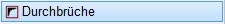
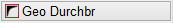
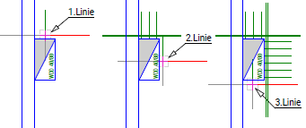
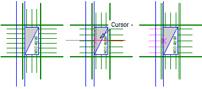
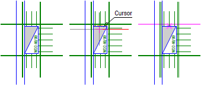
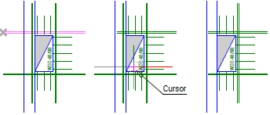
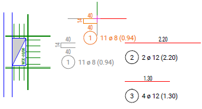
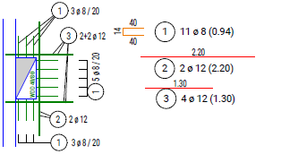

")
")

Bewehrung rechteckiger Durchbrüche mittels Bügeln und Längsstäben.
Die Bearbeitung erfolgt schrittweise anhand der freigeschalteten Optionen. Nach Angabe der Geometrie haben Sie die Möglichkeit, einzelne Parameter zu definieren.
Um die Bewehrung zu übernehmen, muss sie abschließend bestätigt werden. Wenn Sie die Bearbeitung unterbrechen, z. B. durch Anklicken eines anderen Programmteils, wird die nicht abgeschlossene Bewehrung ggf. gelöscht. Bestätigen Sie die Abfrage mit Ja, um die Bearbeitung wieder aufzunehmen.

1.Geometrie angeben
§Klicken Sie die zu bewehrenden Durchbruchskanten (Randlinien) auf der Bewehrungsseite an. [Linie(n)].
–Die Bewehrung wird sofort angezeigt, sie erscheint auf der Seite der Durchbruchskante, auf der die Cursormitte liegt.
–Die Stahlauszüge werden in der Nähe der Durchbrüche abgelegt. Es kann jedoch passieren, dass sie in der Zeichnungsmitte abgelegt werden. Sie können dann im vorletzten Schritt die Auszüge an den endgültigen Ort verschieben.
§Bestätigen Sie die Auswahl der zu bewehrenden Durchbruchskanten mit der rechten Maustaste.
–In der Abfrage wird "99" angeschrieben. Damit wird verhindert, dass Sie durch einen versehentlichen Rechtsklick die Eingaben beenden. [1=Verlegung OK]. Diese Abfrage wird im Folgenden nach jeder optionalen Parameteranpassung eingeblendet. Wenn Sie die Bewehrung beenden möchten, können Sie durch Anklicken von Ende/OK oder der Eingabe von 1 die Bewehrung abschließend bestätigen (s. Schritt 3)
–Um Parameter anzupassen: Wählen Sie die nächste Funktion im Funktionsbereich (z. B. Randabstände). Wir empfehlen, die Funktionen nacheinander abzuarbeiten. Wenn Sie sich sicher sind, dass in den einzelnen Funktionen keine Änderungen vorgenommen werden müssen, können Sie die entsprechenden Funktionen überspringen.
2.Parameter anpassen (optional)

Randabstände für alle Bügel und Längseisen in der Draufsicht definieren. §Klicken Sie auf . §Geben Sie nacheinander die Werte für den Randabstand der Bügel (c1) und für den Randabstand der Wechseleisen (c2) ein. Bestätigen Sie die Werte jeweils mit der Eingabetaste. –Die Randabstände haben keinen Einfluss auf die Abmessungen der Stabformen. –Sie können jetzt weitere Parameter anpassen oder mit Ende/OK die Bewehrung abschließend bestätigen. |
Die Höhe des Steckbügels wird aus der Deckendicke unter Berücksichtigung der oberen und unteren Betondeckung (Randabstände) ermittelt. §Klicken Sie auf . §Geben Sie nacheinander die Werte für die Deckendicke, die Betondeckung oben (c1) und die Betondeckung unten (c3) ein bzw. bestätigen Sie die zu übernehmenden Werte mit der Eingabetaste.
Sie können jetzt weitere Parameter anpassen oder mit Ende/OK die Bewehrung abschließend bestätigen. |
Durchmesser, Abmessungen und Abstand der Bügel an allen Kanten eines Durchbruchs gleich ausführen. §Klicken Sie auf . §Geben Sie nacheinander die Werte für die Steckbügel ein und/oder bestätigen Sie die Werte mit der Eingabetaste.
Sie können jetzt weitere Parameter anpassen oder mit Ende/OK die Bewehrung abschließend bestätigen. |
Durchmesser, Abmessungen und Abstand der Bügel für einzelne Kanten definieren. §Klicken Sie auf . §Wählen Sie die Randlinie, die bearbeitet werden soll. [Rand anklicken]. §Geben Sie die Werte für die Steckbügel ein bzw. bestätigen Sie die vorhandenen Werte mit der Eingabetaste.
§Wiederholen Sie die Schritte ggf. für andere Durchbruchskanten. Sie können jetzt weitere Parameter anpassen oder mit Ende/OK die Bewehrung abschließend bestätigen. |
Anzahl, Durchmesser und Abmessungen der Längseisen an allen Kanten eines Durchbruchs gleich ausführen. Es kann von Vorteil sein, alle Längseisen auf die Hauptparameter zu ändern und anschließend die einzelnen Seiten exakt anzupassen. §Klicken Sie auf . §Wählen Sie die Verlegerichtung: a)1 = nebeneinander: Die Längseisen werden als Staffel verlegt (VeStaf). b)2 = übereinander: Die Längseisen werden als Form verlegt (VeForm). §Geben Sie die Werte für die Längseisen ein bzw. bestätigen Sie die vorhandenen Werte mit Rechtsklick.
Sie können jetzt weitere Parameter anpassen oder mit Ende/OK die Bewehrung abschließend bestätigen. |
Anzahl, Durchmesser, Abmessungen und Verlegerichtung der Längseisen für einzelne Kanten definieren. §Klicken Sie auf . §Wählen Sie die Randlinie, die bearbeitet werden soll. [Rand anklicken]. §Wählen Sie die Verlegerichtung: a)1 = nebeneinander: Die Längseisen werden als Staffel verlegt (VeStaf). b)2 = übereinander: Die Längseisen werden als Form verlegt (VeForm). §Geben Sie die Werte für die Längseisen ein bzw. bestätigen Sie die vorhandenen Werte mit der Eingabetaste.
§Wiederholen Sie die Schritte ggf. für andere Durchbruchskanten. Sie können jetzt weitere Parameter anpassen oder mit Ende/OK die Bewehrung abschließend bestätigen. |
Beim Anlegen einer Bewehrung werden automatisch Auszüge erstellt. Die Auszugsteile (Form und Auszugstext) können nacheinander verschoben werden. Das Programm nimmt automatisch der Reihe nach jeden Auszug und jeden Auszugstext an den Cursor, so dass Sie lediglich die endgültige Lage bestimmen müssen. §Klicken Sie auf . §Klicken Sie an die Stelle, an der die aktuelle Form bzw. der aktuelle Auszugstext erscheinen soll. §Wiederholen Sie den Vorgang, bis alle Auszüge an der gewünschten Stelle platziert sind. –Mit Esc können Sie die Auszüge wieder an die ursprüngliche, vom Programm vorgesehene Stelle zurücksetzen. –Mit Rechtsklick übernehmen Sie die vorgeschlagene Lage. –Sie können jetzt noch weitere Parameter anpassen oder mit Ende/OK die Bewehrung abschließend bestätigen. |
§Klicken Sie auf  oder geben Sie unter 1=Verlegung OK den Wert 1 ein und bestätigen Sie mit der Eingabetaste.
oder geben Sie unter 1=Verlegung OK den Wert 1 ein und bestätigen Sie mit der Eingabetaste.
Beispiel:
An diesem Durchbruch soll die Vorgehensweise für die Details ausführlich, Schritt für Schritt, beschrieben werden. |
|
 |
Klicken Sie im Menü Formstahl Formst auf Detail. In der dortigen Auswahl auf Durchbruch. Klicken Sie nun die Seiten des Durchbruchs an. Jedes Mal wird sofort die Bewehrung gezeichnet. Nach der letzten Linie drücken Sie die rechte Maustaste. |
 |
Wenn die Deckendicke 18cm beträgt und die Betondeckung der Grundbetondeckung aus [Systemdaten | Formstahl | Allgemein → Vorschlag Betonüberdeckung (cm)] entspricht, können Sie direkt auf Bügel gleich klicken. Ändern Sie den Abstand a von 0.15 auf „0.2“ m. Die Tlg1 und Tlg3 werden auf „0.4“ m geändert. Klicken Sie auf Bügel unters und dann die gezeigte Linie auf der Wand. Hier den ø auf „0“ setzen. |
 |
Klicken Sie auf Längs unters und dann die obere Kante des Durchbruchs an. Achten Sie auf die Fangmarke bis die richtige Linie markiert wird.
|
 |
Klicken Sie nun die untere Durchbruchkante an und verfahren wie bei der oberen Linie. Um die Längseisen von der Kante auf der Wand zu entfernen klicken Sie diese an und geben als Durchmesser „0“ an. Das Ergebnis sollte jetzt so aussehen wie links zu sehen ist. |
 |
Klicken Sie nun auf ver Auszüge. Sofort hängt der Bügel mitsamt dem Auszugstext am Cursor. Schieben Sie diesen an eine geeignete Stelle und drücken die linke Maustaste. Jetzt befindet sich der Auszugstext am Cursor. Schieben Sie ihn rechts neben den Auszug. Als nächstes erscheint der erste Längseisenauszug am Cursor. Gehen Sie wie beschrieben vor. Auch den letzten Auszug schieben Sie an eine geeignete Stelle und drücken jeweils die linke Maustaste. |
 |
Klicken Sie zum Schluss auf Ende/OK, um die Bearbeitung zu beenden. Um die Verlegungen zu beschriften, rufen Sie im Formstahlmenü BiPos auf. Benutzen Sie immer Harfe oder Fächer wie im Beispiel gezeigt. |
Zugehörige Referenzen: